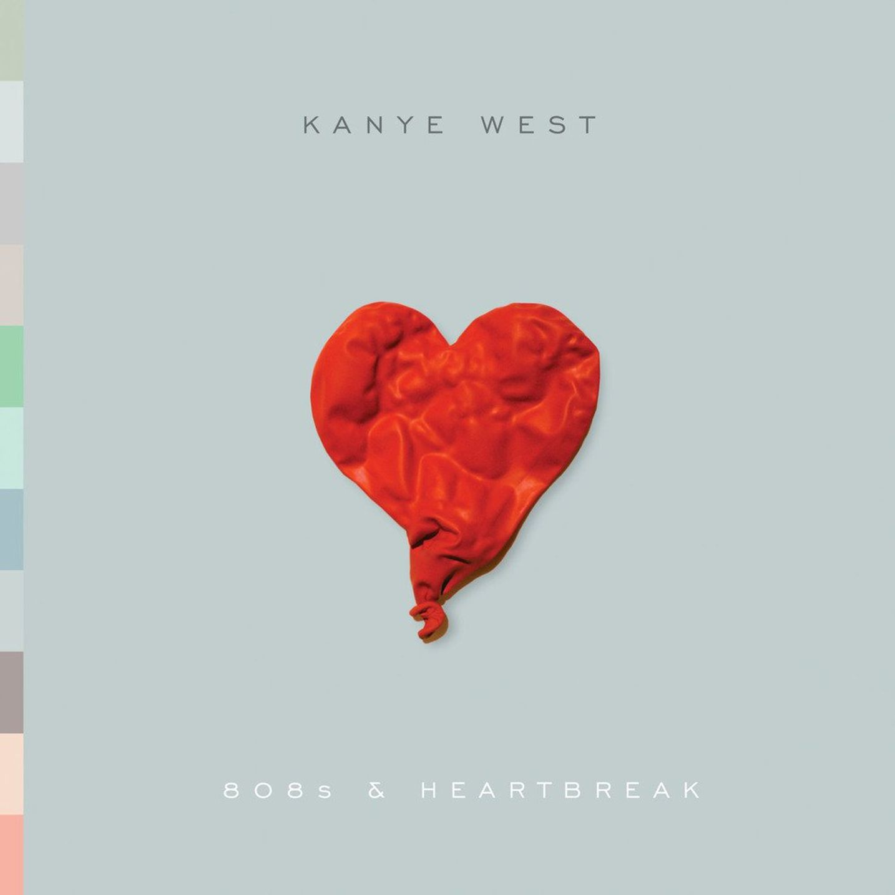
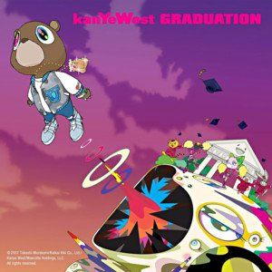
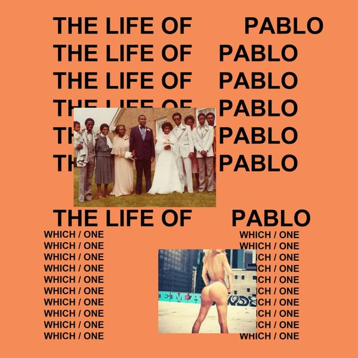

Kanye West
1. My Beautiful Dark Twisted Fantasy
| Track List |
| 1. Dark Fantasy |
| 2. Gorgeous |
| 3. Power |
| 4. All of the Lights (Interlude) |
| 5. All of the Lights |
| 6. Monster |
| 7. So Appalled |
| 8. Devil in a New Dress |
| 9. Runaway |
| 10. Hell of a Life |
| 11. Blame Game |
| 12. Lost in the World |
| 13. Who Will Survive |
| 14. See Me now |

2. 808s & Heartbreak
Street Lights

3. Graduation
The Glory

4. The Life of pablo
Saint Pablo
The ubiquitous Kanye West. From his famous quip “George Bush doesn’t care about black people” to “I'ma let you finish” to marrying Kim Kardashian to announcing that he’s running for President, you can see that he’s a staple in the tabloids and blog posts.
But that certainly doesn’t take anything away from his music. As matter of fact, it makes it better. For instance, his 2010 solo album, My Beautiful Dark Twisted Fantasy was universally praised by fans and critics alike; it was recorded during the backlash he received from the Swift interruption and during his break-up with then girlfriend Amber Rose.
He has scored other well known hits as well from each of his previous studio albums, such as “Stronger,” “Heartless,” and “Gold Digger.” Each of his albums have been massive critical and commercial successes, including his collaboration album with Jay Z, Watch the Throne.
Kanye’s sixth solo album, Yeezus, polarized his fan base and the general public, but was heaped with rave reviews by music critics. West released his seventh and most delayed (yet hyped up) body of work The Life of Pablo which was illegally downloaded over 500 000 times after its TIDAL-exclusive release angered fans. West notably updated the album multiple times on TIDAL after its release.
The public’s love for Kanye West has been apparent from the get-go, and each of his solo albums, bar his 2004 debut, The College Dropout, has peaked at #1 on the the U.S. Billboard 200 Album Chart.